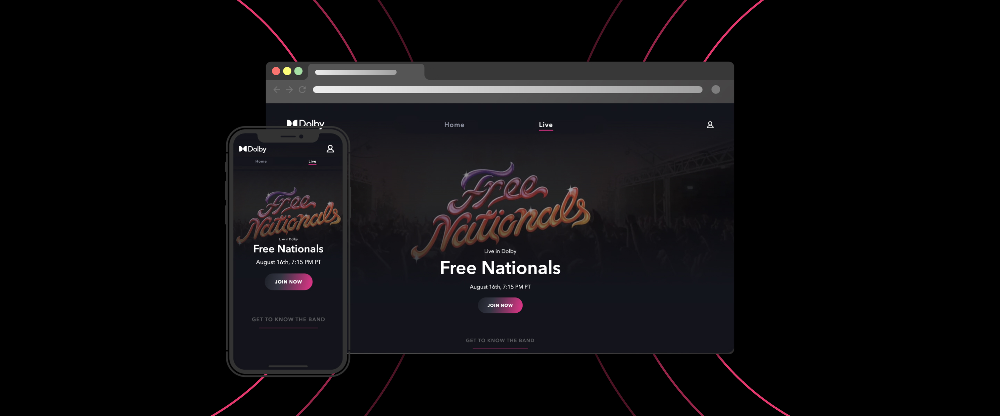
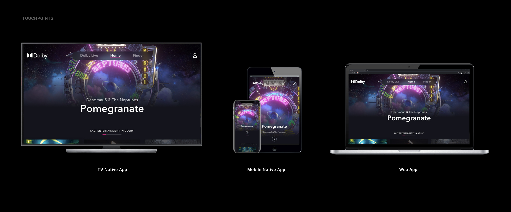
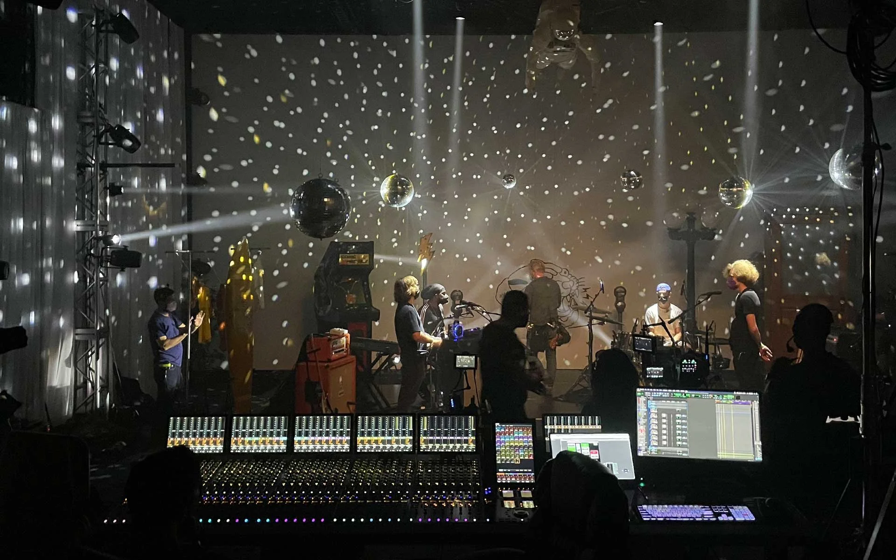
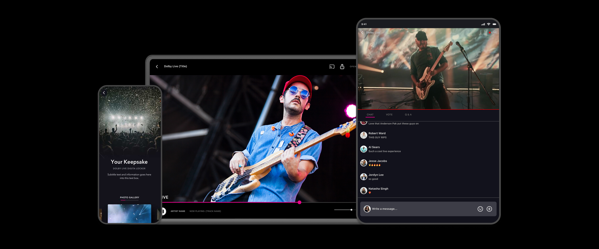
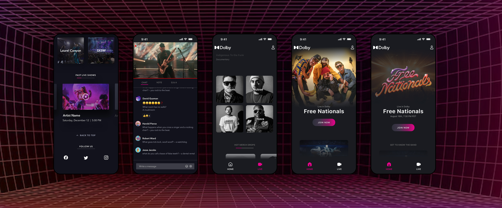
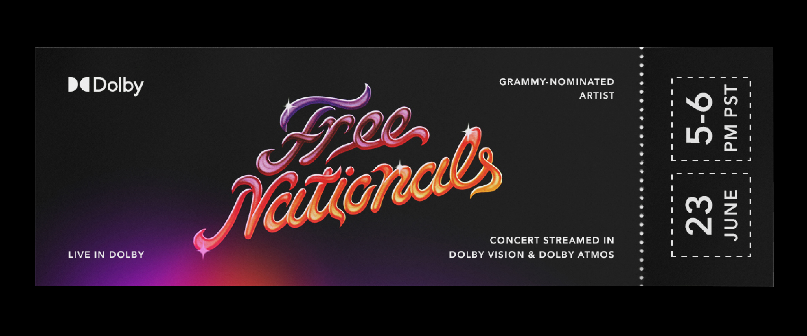

Live in Dolby
A live-music experience bridging virtual and real, fans and artists, connected through Dolby's best picture and sound.

The pandemic took live music away. We asked how technology could give the feeling back.
With venues dark, people were starved for connection and community, the specific electricity of being in a room while something happens live. A recording wasn't it. A video call wasn't it. The brief was to find a third thing: a stream that felt like presence.
Dolby was the right place to attempt it. If anyone could make a screen feel like a room, it was the company whose whole reason to exist is fidelity of picture and sound.
Expand Dolby's digital presence and show off both Dolby Vision and Dolby Atmos at once.
One experience had to live everywhere a fan already watched: living-room TV, phone, and the web. Same event, designed to feel native to each surface rather than ported onto it.

This was an interdisciplinary brief, so I worked across both the physical set and the digital product.
On one side, the stage itself, thresholds, lighting, the spatial choreography of where a performance happens and how it reads on camera. On the other, the app a fan actually held: the watch screen, the chat, the join flow. Designing both meant the experience stayed coherent from the room all the way to the phone.


Watch, react, vote, ask, buy, the live show became something you did, not just something you saw.




So did this actually happen? Yes, and it was awesome.
We shipped a genuinely new way to approach live-streaming: high-fidelity picture and sound, an authentic feeling of connection between viewer and performer, and a real show people showed up for in the moment.
This is the project where I got to use all of myself, architecture brain, product instincts, a love of live experiences, on one problem. Designing the room and the app together taught me that an experience is only as good as its weakest surface, and that fidelity isn't a spec sheet; it's whether someone felt something.